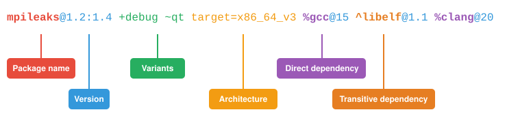
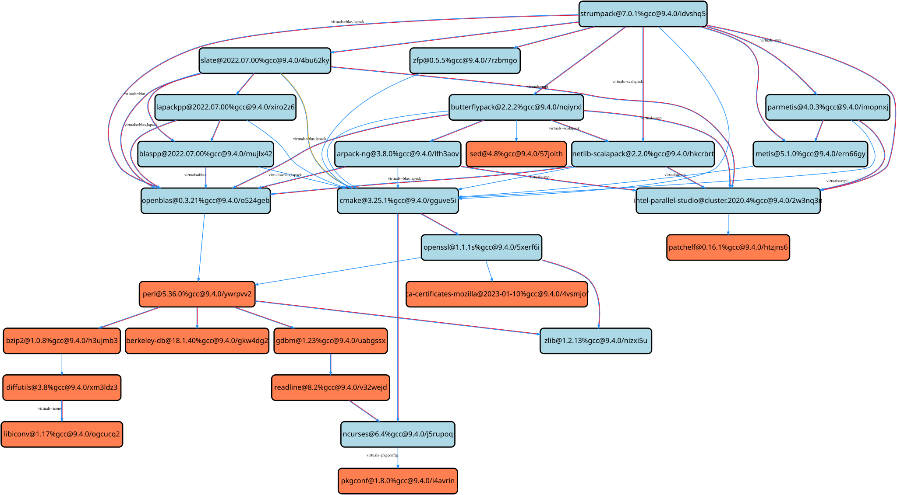

Spec Syntax¶
Spack has a specific syntax to describe package constraints. Each constraint is individually referred to as a spec. Spack uses specs to:
Refer to a particular build configuration of a package, or
Express requirements, or preferences, on packages via configuration files, or
Query installed packages, or buildcaches
Specs are more than a package name and a version; you can use them to specify the compiler, compiler version, architecture, compile options, and dependency options for a build. In this section, we’ll go over the full syntax of specs.
Here is an example of using a complex spec to install a very specific configuration of mpileaks:
$ spack install mpileaks@1.2:1.4 +debug ~qt target=x86_64_v3 %gcc@15 ^libelf@1.1 %clang@20
The figure below helps you get a sense of the various parts that compose this spec:

When installing this, you will get:
The
mpileakspackage at some version between1.2and1.4(inclusive),with
debugoptions enabled, and withoutqtsupport,optimized for an
x86_64_v3architecture,built using
gccat version15,depending on
libelfat version1.1, built withclangat version20.
Most specs will not be as complicated as this one, but this is a good example of what is possible with specs. There are a few general rules that we can already infer from this first example:
Users can be as vague, or as specific, as they want about the details of building packages
The spec syntax is recursive, i.e. each dependency after
%or^is a spec itselfTransitive dependencies come after the
^sigil, and they always refer to the root packageDirect dependencies come after the
%sigil, and they refer either to the root package, or to the last transitive dependency defined
The flexibility the spec syntax offers in specifying the details of a build makes Spack good for beginners and experts alike.
Software Model¶
To really understand what’s going on above, we need to think about how software is structured.
An executable or a library generally depends on other libraries in order to run.
We can represent the relationship between a package and its dependencies as a graph.
Here is a simplified dependency graph for mpileaks:
Each box above is a package, and each arrow represents a dependency on some other package.
For example, we say that the package mpileaks depends on callpath and mpich.
mpileaks also depends indirectly on dyninst, libdwarf, and libelf, in that these libraries are dependencies of callpath.
To install mpileaks, Spack has to build all of these packages.
Dependency graphs in Spack have to be acyclic, and the depends on relationship is directional, so this is a directed, acyclic graph or DAG.
The package name identifier in the spec is the root of some dependency DAG, and the DAG itself is implicit.
Spack knows the precise dependencies among packages, but users do not need to know the full DAG structure.
Each ^ in the full spec refers to a transitive dependency of the root package.
Each % refers to a direct dependency, either of the root, or of the last defined transitive dependency .
Spack allows only a single configuration of each package, where that is needed for consistency.
Above, both mpileaks and callpath depend on mpich, but mpich appears only once in the DAG.
You cannot build an mpileaks version that depends on one version of mpich and on a callpath version that depends on some other version of mpich.
In general, such a configuration would likely behave unexpectedly at runtime, and Spack enforces this to ensure a consistent runtime environment.
The purpose of specs is to abstract this full DAG away from Spack users.
A user who does not care about the DAG at all, can refer to mpileaks by simply writing:
mpileaks
The spec becomes only slightly more complicated, if that user knows that mpileaks indirectly uses dyninst and wants a particular version of dyninst:
mpileaks ^dyninst@8.1
Spack will fill in the rest of the details before installing the spec. The user only needs to know package names and minimal details about their relationship. You can put all the same modifiers on dependency specs that you would put on the root spec. That is, you can specify their versions, variants, and architectures just like any other spec. Specifiers are associated with the nearest package name to their left.
Virtual dependencies¶
The dependency graph for mpileaks we saw above wasn’t quite accurate.
mpileaks uses MPI, which is an interface that has many different implementations.
Above, we showed mpileaks and callpath depending on mpich, which is one particular implementation of MPI.
However, we could build either with another implementation, such as openmpi or mvapich.
Spack represents interfaces like this using virtual dependencies.
The real dependency DAG for mpileaks looks like this:
Notice that mpich has now been replaced with mpi.
There is no real MPI package, but some packages provide the MPI interface, and these packages can be substituted in for mpi when mpileaks is built.
Spack is unique in that its virtual packages can be versioned, just like regular packages.
A particular version of a package may provide a particular version of a virtual package.
A package can depend on a particular version of a virtual package.
For instance, if an application needs MPI-2 functions, it can depend on mpi@2: to indicate that it needs some implementation that provides MPI-2 functions.
Below are more details about the specifiers that you can add to specs.
Version specifier¶
A version specifier
pkg@specifier
comes after a package name and starts with @.
It can be something abstract that matches multiple known versions or a specific version.
The version specifier usually represents a range of versions:
# All versions between v1.0 and v1.5.
# This includes any v1.5.x version
@1.0:1.5
# All versions up to and including v3
# This would include v3.4 etc.
@:3
# All versions above and including v4.2
@4.2:
but can also be a specific version:
# Exactly version v3.2, will NOT match v3.2.1 etc.
@=3.2
As a shorthand, @3 is equivalent to the range @3:3 and includes any version with major version 3.
Versions are ordered lexicographically by their components.
For more details on the order, see the packaging guide.
Notice that you can distinguish between the specific version @=3.2 and the range @3.2.
This is useful for packages that follow a versioning scheme that omits the zero patch version number: 3.2, 3.2.1, 3.2.2, etc.
In general, it is preferable to use the range syntax @3.2, because ranges also match versions with one-off suffixes, such as 3.2-custom.
A version specifier can also be a list of ranges and specific versions, separated by commas. For example:
@1.0:1.5,=1.7.1
matches any version in the range 1.0:1.5 and the specific version 1.7.1.
Git versions¶
Note
Users wanting to just match specific commits for branch or tag based versions should assign the commit variant (commit=<40 char sha>).
Spack reserves this variant specifically to track provenance of git based versions.
Spack will attempt to compute this value for you automatically during concretization and raise a warning if it is unable to assign the commit.
Further details can be found in Git Version Provenance.
For packages with a git attribute, git references may be specified instead of a numerical version (i.e., branches, tags, and commits).
Spack will stage and build based off the git reference provided.
Acceptable syntaxes for this are:
# commit hashes
foo@abcdef1234abcdef1234abcdef1234abcdef1234 # 40 character hashes are automatically treated as git commits
foo@git.abcdef1234abcdef1234abcdef1234abcdef1234
# branches and tags
foo@git.develop # use the develop branch
foo@git.0.19 # use the 0.19 tag
Spack always needs to associate a Spack version with the git reference, which is used for version comparison. This Spack version is heuristically taken from the closest valid git tag among the ancestors of the git ref.
Once a Spack version is associated with a git ref, it is always printed with the git ref.
For example, if the commit @git.abcdefg is tagged 0.19, then the spec will be shown as @git.abcdefg=0.19.
If the git ref is not exactly a tag, then the distance to the nearest tag is also part of the resolved version.
@git.abcdefg=0.19.git.8 means that the commit is 8 commits away from the 0.19 tag.
In cases where Spack cannot resolve a sensible version from a git ref, users can specify the Spack version to use for the git ref.
This is done by appending = and the Spack version to the git ref.
For example:
foo@git.my_ref=3.2 # use the my_ref tag or branch, but treat it as version 3.2 for version comparisons
foo@git.abcdef1234abcdef1234abcdef1234abcdef1234=develop # use the given commit, but treat it as develop for version comparisons
Details about how versions are compared and how Spack determines if one version is less than another are discussed in the developer guide.
Variants¶
Variants are named options associated with a particular package and are typically used to enable or disable certain features at build time. They are optional, as each package must provide default values for each variant it makes available.
The variants available for a particular package are defined by the package author.
spack info <package> will provide information on what build variants are available.
There are different types of variants.
Boolean Variants¶
Typically used to enable or disable a feature at compile time.
For example, a package might have a debug variant that can be explicitly enabled with:
+debug
and disabled with
~debug
Single-valued Variants¶
Often used to set defaults.
For example, a package might have a compression variant that determines the default compression algorithm, which users could set to:
compression=gzip
or
compression=zstd
Multi-valued Variants¶
A package might have a fabrics variant that determines which network fabrics to support.
Users could activate multiple values at the same time.
For instance:
fabrics=verbs,ofi
enables both InfiniBand verbs and OpenFabrics interfaces. The values are separated by commas.
The meaning of fabrics=verbs,ofi is to enable at least the specified fabrics, but other fabrics may be enabled as well.
If the intent is to enable only the specified fabrics, then the:
fabrics:=verbs,ofi
syntax should be used with the := operator.
Variant propagation to dependencies¶
Spack allows variants to propagate their value to the package’s dependencies by using ++, --, and ~~ for boolean variants.
For example, for a debug variant:
mpileaks ++debug # enabled debug will be propagated to dependencies
mpileaks +debug # only mpileaks will have debug enabled
To propagate the value of non-boolean variants Spack uses name==value.
For example, for the stackstart variant:
mpileaks stackstart==4 # variant will be propagated to dependencies
mpileaks stackstart=4 # only mpileaks will have this variant value
Spack also allows variants to be propagated from a package that does not have that variant.
Compiler Flags¶
Compiler flags are specified using the same syntax as non-boolean variants, but fulfill a different purpose.
While the function of a variant is set by the package, compiler flags are used by the compiler wrappers to inject flags into the compile line of the build.
Additionally, compiler flags can be inherited by dependencies by using ==.
spack install libdwarf cppflags=="-g" will install both libdwarf and libelf with the -g flag injected into their compile line.
Notice that the value of the compiler flags must be quoted if it contains any spaces.
Any of cppflags=-O3, cppflags="-O3", cppflags='-O3', and cppflags="-O3 -fPIC" are acceptable, but cppflags=-O3 -fPIC is not.
Additionally, if the value of the compiler flags is not the last thing on the line, it must be followed by a space.
The command spack install libelf cppflags="-O3"%intel will be interpreted as an attempt to set cppflags="-O3%intel".
The six compiler flags are injected in the same order as implicit make commands in GNU Autotools.
If all flags are set, the order is $cppflags $cflags|$cxxflags $ldflags <command> $ldlibs for C and C++, and $fflags $cppflags $ldflags <command> $ldlibs for Fortran.
Architecture specifiers¶
Each node in the dependency graph of a spec has an architecture attribute.
This attribute is a triplet of platform, operating system, and processor.
You can specify the elements either separately by using the reserved keywords platform, os, and target:
$ spack install libelf platform=linux
$ spack install libelf os=ubuntu18.04
$ spack install libelf target=broadwell
Normally, users don’t have to bother specifying the architecture if they are installing software for their current host, as in that case the values will be detected automatically. If you need fine-grained control over which packages use which targets (or over all packages’ default target), see Package Preferences.
Support for specific microarchitectures¶
Spack knows how to detect and optimize for many specific microarchitectures and encodes this information in the target portion of the architecture specification.
A complete list of the microarchitectures known to Spack can be obtained in the following way:
$ spack arch --known-targets
Generic architectures (families)
aarch64 armv8.1a armv8.3a armv8.5a armv9.0a ppc64 ppcle sparc x86 x86_64_v2 x86_64_v4
arm armv8.2a armv8.4a armv8.6a ppc ppc64le riscv64 sparc64 x86_64 x86_64_v3
GenuineIntel - x86
i686 pentium2 pentium3 pentium4 prescott
GenuineIntel - x86_64
nocona nehalem sandybridge haswell skylake cannonlake cascadelake sapphirerapids
core2 westmere ivybridge broadwell mic_knl skylake_avx512 icelake
AuthenticAMD - x86_64
k10 bulldozer piledriver zen steamroller zen2 zen3 excavator zen4 zen5
IBM - ppc64
power7 power8 power9 power10
IBM - ppc64le
power8le power9le power10le
Cavium - aarch64
thunderx2
Fujitsu - aarch64
a64fx
ARM - aarch64
cortex_a72 neoverse_n1 neoverse_v1 neoverse_v2 neoverse_n2
Apple - aarch64
m1 m2 m3 m4
SiFive - riscv64
u74mc
When a spec is installed, Spack matches the compiler being used with the microarchitecture being targeted to inject appropriate optimization flags at compile time. Giving a command such as the following:
$ spack install zlib target=icelake %gcc@14
will produce compilation lines similar to:
$ /usr/bin/gcc-14 -march=icelake-client -mtune=icelake-client -c ztest10532.c
$ /usr/bin/gcc-14 -march=icelake-client -mtune=icelake-client -c -fPIC -O2 ztest10532.
...
where the flags -march=icelake-client -mtune=icelake-client are injected by Spack based on the requested target and compiler.
If Spack determines that the requested compiler cannot optimize for the requested target or cannot build binaries for that target at all, it will exit with a meaningful error message:
$ spack install zlib target=icelake %gcc@5
==> Error: cannot produce optimized binary for micro-architecture "icelake" with gcc@5.5.0 [supported compiler versions are 8:]
Conversely, if an older compiler is selected for a newer microarchitecture, Spack will optimize for the best match instead of failing:
$ spack arch
linux-ubuntu18.04-broadwell
$ spack spec zlib%gcc@4.8
Input spec
--------------------------------
zlib%gcc@4.8
Concretized
--------------------------------
zlib@1.2.11%gcc@4.8+optimize+pic+shared arch=linux-ubuntu18.04-haswell
$ spack spec zlib%gcc@9.0.1
Input spec
--------------------------------
zlib%gcc@9.0.1
Concretized
--------------------------------
zlib@1.2.11%gcc@9.0.1+optimize+pic+shared arch=linux-ubuntu18.04-broadwell
In the snippet above, for instance, the microarchitecture was demoted to haswell when compiling with gcc@4.8 because support to optimize for broadwell starts from gcc@4.9:.
Finally, if Spack has no information to match the compiler and target, it will proceed with the installation but avoid injecting any microarchitecture-specific flags.
Dependencies¶
Each node in a DAG can specify dependencies using either the % or the ^ sigil:
The
%sigil identifies direct dependencies, which means there must be an edge connecting the dependency to the node they refer to.The
^sigil identifies transitive dependencies, which means the dependency just needs to be in the sub-DAG of the node they refer to.
The order of transitive dependencies does not matter when writing a spec. For example, these two specs represent exactly the same configuration:
mpileaks ^callpath@1.0 ^libelf@0.8.3
mpileaks ^libelf@0.8.3 ^callpath@1.0
Direct dependencies specified with % apply either to the most recent transitive dependency (^), or, if none, to the root package in the spec.
So in the spec:
root %dep1 ^transitive %dep2 %dep3
dep1 is a direct dependency of root, while both dep2 and dep3 are direct dependencies of transitive.
Constraining virtual packages¶
When installing a package that depends on a virtual package, see Virtual dependencies, you can opt to specify the particular provider you want to use, or you can let Spack pick. For example, if you just type this:
$ spack install mpileaks
Then Spack will pick an mpi provider for you according to site policies.
If you really want a particular version, say mpich, then you could run this instead:
$ spack install mpileaks ^mpich
This forces Spack to use some version of mpich for its implementation.
As always, you can be even more specific and require a particular mpich version:
$ spack install mpileaks ^mpich@3
The mpileaks package in particular only needs MPI-1 commands, so any MPI implementation will do.
If another package depends on mpi@2 and you try to give it an insufficient MPI implementation (e.g., one that provides only mpi@:1), then Spack will raise an error.
Likewise, if you try to plug in some package that doesn’t provide MPI, Spack will raise an error.
Explicit binding of virtual dependencies¶
There are packages that provide more than just one virtual dependency. When interacting with them, users might want to utilize just a subset of what they could provide and use other providers for virtuals they need.
It is possible to be more explicit and tell Spack which dependency should provide which virtual, using a special syntax:
$ spack spec strumpack ^mpi=intel-parallel-studio+mkl ^lapack=openblas
Concretizing the spec above produces the following DAG:

where intel-parallel-studio could provide mpi, lapack, and blas but is used only for the former.
The lapack and blas dependencies are satisfied by openblas.
Dependency edge attributes¶
Some specs require additional information about the relationship between a package and its dependency.
This information lives on the edge between the two, and can be specified by following the dependency sigil with square-brackets [].
Edge attributes are always specified as key-value pairs:
root ^[key=value] dep
In the following sections we’ll discuss the edge attributes that are currently allowed in the spec syntax.
Virtuals¶
Packages can provide, or depend on, multiple virtual packages.
Users can select which virtuals to use from which dependency by specifying the virtuals edge attribute:
$ spack install mpich %[virtuals=c,cxx] clang %[virtuals=fortran] gcc
The command above tells Spack to use clang to provide the c and cxx virtuals, and gcc to provide the fortran virtual.
The special syntax we have seen in Explicit binding of virtual dependencies is a more compact way to specify the virtuals edge attribute.
For instance, an equivalent formulation of the command above is:
$ spack install mpich %c,cxx=clang %fortran=gcc
Conditional dependencies¶
Conditional dependencies allow dependency constraints to be applied only under certain conditions.
We can express conditional constraints by specifying the when edge attribute:
$ spack install hdf5 ^[when=+mpi] mpich@3.1
This tells Spack that hdf5 should depend on mpich@3.1 if it is configured with MPI support.
Dependency propagation¶
The dependency specifications on a node, can be propagated using a double percent %% sigil.
This is particularly useful when specifying compilers.
For instance, the following command:
$ spack install hdf5+cxx+fortran %%c,cxx=clang %%fortran=gfortran
tells Spack to install hdf5 using Clang as the C and C++ compiler, and GCC as the Fortran compiler.
It also tells Spack to propagate the same choices, as strong preferences, to the runtime sub-DAG of hdf5.
Build tools are unaffected and can still prefer to use a different compiler.
Specifying Specs by Hash¶
Complicated specs can become cumbersome to enter on the command line, especially when many of the qualifications are necessary to distinguish between similar installs.
To avoid this, when referencing an existing spec, Spack allows you to reference specs by their hash.
We previously discussed the spec hash that Spack computes.
In place of a spec in any command, substitute /<hash> where <hash> is any amount from the beginning of a spec hash.
For example, let’s say that you accidentally installed two different mvapich2 installations.
If you want to uninstall one of them but don’t know what the difference is, you can run:
$ spack find --long mvapich2
==> 2 installed packages.
-- linux-centos7-x86_64 / gcc@6.3.0 ----------
qmt35td mvapich2@2.2%gcc
er3die3 mvapich2@2.2%gcc
You can then uninstall the latter installation using:
$ spack uninstall /er3die3
Or, if you want to build with a specific installation as a dependency, you can use:
$ spack install trilinos ^/er3die3
If the given spec hash is sufficiently long as to be unique, Spack will replace the reference with the spec to which it refers. Otherwise, it will prompt for a more qualified hash.
Note that this will not work to reinstall a dependency uninstalled by spack uninstall --force.
Specs on the command line¶
The characters used in the spec syntax were chosen to work well with most shells. However, there are cases where the shell may interpret the spec before Spack gets a chance to parse it, leading to unexpected results. Here we document two such cases, and how to avoid them.
Unix shells¶
On Unix-like systems, the shell may expand ~foo to the home directory of a user named foo, so Spack won’t see it as a disabled boolean variant foo.
To work around this without quoting, you can avoid whitespace between the package name and boolean variants:
mpileaks ~debug # shell may expand this to `mpileaks /home/debug`
mpileaks~debug # use this instead
Alternatively, you can use a hyphen - character to disable a variant, but be aware that this requires a space between the package name and the variant:
mpileaks-debug # wrong: refers to a package named "mpileaks-debug"
mpileaks -debug # right: refers to a package named mpileaks with debug disabled
As a last resort, debug=False can also be used to disable a boolean variant.
Windows CMD¶
In Windows CMD, the caret ^ is an escape character, and needs itself escaping.
Similarly, the equals = character has special meaning in CMD.
To use the caret and equals characters in a spec, you can quote and escape them like this:
C:\> spack install mpileaks "^^libelf" "foo=bar"
These issues are not present in PowerShell. See GitHub issue #42833 and #43348 for more details.